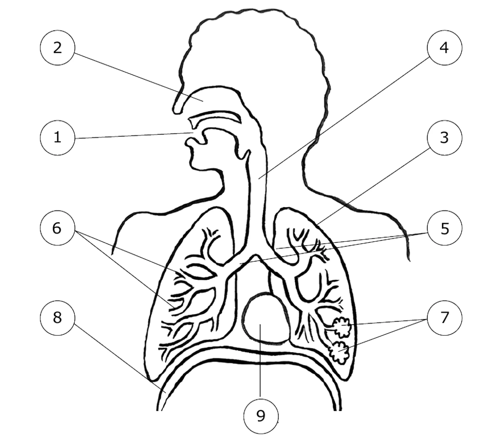
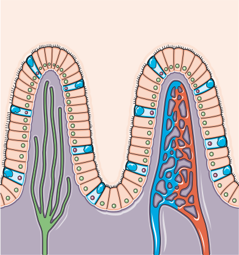

1
L'appareil respiratoire
Retrouve les 9 légendes, puis passe en mode « Respirer » pour suivre l'air.

SVT · Classe de 4e · Activité d'introduction
Respirer, digérer, produire de l'énergie, fabriquer sa propre matière… Les êtres vivants échangent sans cesse avec leur milieu. Mène l'enquête dans quatre lieux d'échanges, puis cherche ce qui les relie.
Enquête 1 · Respiration
Au repos, tu respires entre 12 et 20 fois par minute. Mais jusqu'où va l'air que tu inspires, et que devient-il une fois arrivé au fond de tes poumons ?
L'air que l'on inspire est riche en dioxygène (O₂). L'air que l'on expire contient davantage de dioxyde de carbone (CO₂). Où se fait cet échange ?
Retrouve les 9 légendes, puis passe en mode « Respirer » pour suivre l'air.

Au bout des bronchioles, l'air arrive dans des centaines de millions de minuscules sacs. Observe ce qui s'y passe.
Termine les étapes 1 et 2 pour débloquer le bilan.
L'air inspiré descend par la trachée, les bronches et les bronchioles jusqu'aux alvéoles pulmonaires. Là, le dioxygène passe de l'air dans le sang, et le dioxyde de carbone passe du sang dans l'air, qui est ensuite expiré.
Le sang repart des poumons riche en dioxygène… mais vers où ?
Enquête 2 · Digestion
Ton tube digestif mesure environ 8 mètres de long. Les aliments y sont transformés en nutriments. Mais à quel endroit ces nutriments quittent-ils le tube digestif pour passer dans le sang ?
La digestion transforme les aliments en petites molécules, les nutriments. Ce qui n'est pas digéré est rejeté.
Complète les 9 cases, suis le voyage d'une bouchée, puis relève le défi.
Sa paroi forme des millions de replis en forme de doigts : les villosités intestinales. Observe le passage des nutriments.

Termine l'étape 1 (légendes, trajet et défi) pour débloquer le bilan.
Tout au long du tube digestif, les aliments sont transformés en nutriments. C'est dans l'intestin grêle, au niveau des villosités, que les nutriments traversent la paroi et passent dans le sang. Ce qui n'est pas digéré est rejeté par l'anus.
Comment ces nutriments arrivent-ils jusqu'à tes muscles ?
Enquête 3 · Énergie
Tes muscles ont besoin d'énergie pour se contracter. Cette énergie est produite dans chacune de leurs cellules. Mais avec quoi, et que rejettent-elles ?
Une cellule est délimitée par une membrane ; elle contient du cytoplasme et un noyau. Une cellule du muscle est collée à de minuscules vaisseaux sanguins.
Nomme les parties de la cellule et ce qui circule sur chaque flèche. Le code couleur des enquêtes 1 et 2 va t'aider.
Fais glisser le schéma de côté pour tout voir.
Glisse les mots sur les pointillés et au-dessus des flèches.
Complète le schéma et réponds aux questions pour débloquer le bilan.
La cellule musculaire prélève dans le sang du dioxygène et des nutriments. Elle les utilise pour produire l'énergie nécessaire à son fonctionnement. Elle rejette dans le sang du dioxyde de carbone et des déchets. Pendant un effort, tous ces échanges augmentent.
D'où viennent le dioxygène et les nutriments que le sang apporte à la cellule ?
Enquête 4 · Nutrition des plantes
Un tournesol peut dépasser 2 mètres en un seul été. Pour fabriquer toute cette matière, la plante prélève ce dont elle a besoin à deux endroits bien séparés.
Une plante verte fabrique sa propre matière. Pour cela, elle a besoin de lumière et prélève de la matière minérale dans son milieu.
Complète les cadres, puis observe la plante de jour et de nuit. Attention, une étiquette est un intrus !
Fais glisser le schéma de côté pour tout voir.
vient du Soleil, captée par les feuilles.
La plante fabrique ainsi sa matière : (tige, feuilles, graines…)
Gaz prélevé dans l'air par les feuilles :
Puisés dans le sol par les racines : et
Glisse chaque étiquette dans un cadre. L'une d'elles ne sert à rien.
Clique sur les feuilles ou les racines du schéma pour les observer de plus près.
Lumière, dioxyde de carbone, eau et sels minéraux : la plante prélève tout cela en même temps, à deux endroits différents.
Complète le schéma et réponds aux questions pour débloquer le bilan.
Les feuilles prélèvent le dioxyde de carbone de l'air. Grâce à la lumière, elles fabriquent des sucres à partir de ce CO₂ et de l'eau : c'est la photosynthèse. Les racines, elles, prélèvent l'eau et les sels minéraux dans le sol.
L'eau entre par les racines mais elle est utilisée dans les feuilles. Comment fait-elle le trajet ?
Synthèse
Tu as exploré quatre lieux d'échanges. Regarde-les côte à côte : les entrées et les sorties ne se font jamais au même endroit.
Écris ton idée avec tes mots. Elle reste enregistrée sur cet appareil.
Pour le professeur. Après la mise en commun des hypothèses, révèle une piste animée : chez l'animal comme chez la plante, un système de circulation relie les lieux d'échanges.
Le sang circule dans des vaisseaux. Il se charge en dioxygène dans les poumons et en nutriments dans l'intestin, puis les apporte aux cellules, qui y rejettent CO₂ et déchets.
La sève brute monte des racines vers les feuilles. La sève élaborée distribue les sucres fabriqués par les feuilles dans toute la plante.
C'est ce que nous allons étudier : la circulation du sang chez l'animal et la circulation de la sève chez la plante.